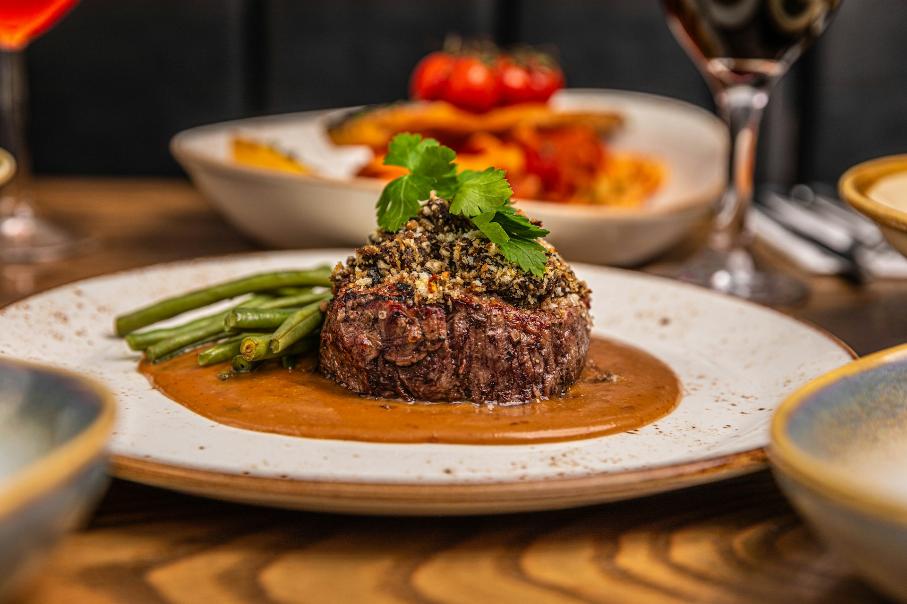

Home
Steak au Poivre

Description
A classic French bistro dish featuring tender steak coated in crushed peppercorns, seared to form a bold, aromatic crust, and finished with a rich pan sauce of cream, butter, and a splash of cognac or brandy.
Ingredients
- 2 beef tenderloin steaks (filet mignon; ~2-3 cm thick)
- 2-3 tbsp whole black peppercorns, coarsely crushed
- Salt, to taste
- 1 tbsp neutral oil (e.g., vegetable or canola)
- 1 tbsp unsalted butter
- 1 small shallot, finely minced
- 60 ml cognac or brandy
- 120 ml heavy cream
- 1 tsp Dijon mustard (optional)
- 1 tsp green peppercorns in brine, drained (optional)
Steps
- Prep the steaks: Pat tenderloin steaks dry. Season lightly with salt. Press crushed peppercorns onto both sides.
- Sear: Heat oil in a skillet over medium-high heat. Sear steaks 3-4 minutes per side (adjust for thickness and doneness). Transfer to a plate and rest.
- Sauté aromatics: Reduce heat to medium. Add butter and minced shallot to the same pan; cook until softened and fragrant, about 1-2 minutes.
- Deglaze: Carefully add cognac or brandy, scraping up browned bits. Let reduce by half.
- Finish sauce: Stir in cream (and mustard/green peppercorns if using). Simmer until slightly thickened.
- Serve: Spoon the shallot cream sauce over the rested steaks and serve immediately. Bon Appétit :)